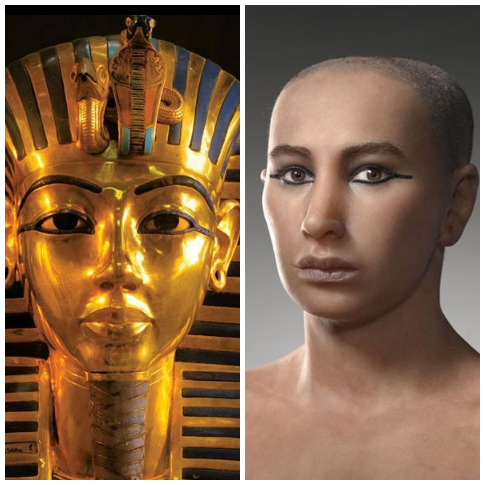
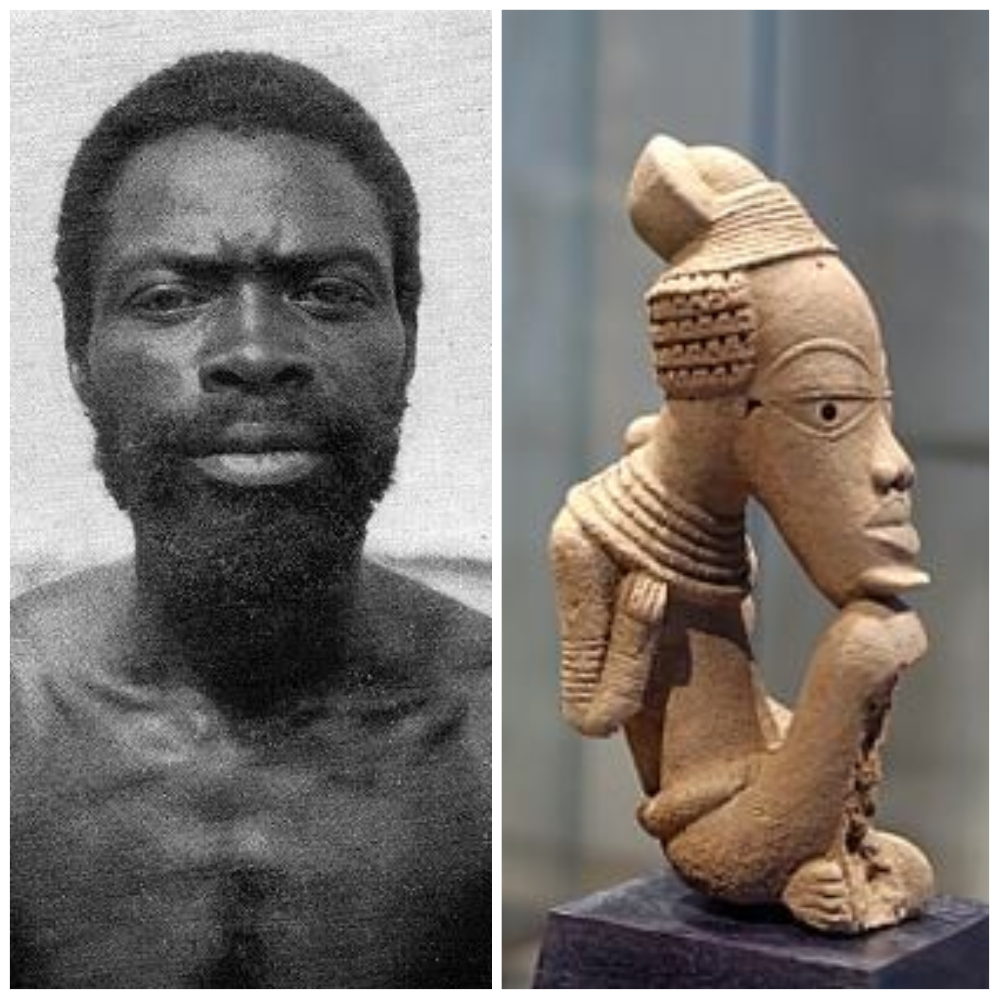

الفن في مصر القديمة وكوش القديمة
حضارتان جارتان ومتصلتان بالنيل، ولكل منهما أسلوبها الفني الخاص ضمن إرث منصة القبة التعليمية.


الأسلوب المصري
تُظهر التماثيل المصرية وجوهاً متناسقة بأنف مستقيم وشفاه معتدلة الامتلاء، وفق قواعد فنية ثابتة التزمها النحاتون قروناً، وهي تعبّر عن مثال فني أكثر من كونها صورة لكل الناس.
الأسلوب الكوشي
تُظهر آثار كوش والنوبة وجوهاً بأنف عريض وشفاه ممتلئة وبشرة داكنة، وهي أسلوب حضارة مستقلة لها ملوكها وكتابتها المروية.
دراسة ناشيونال جيوجرافيك
كشف مشروع خريطة الجينات الوراثية الذي أجرته ناشيونال جيوجرافيك أن أصول العرب والمصريين أكثر تنوعاً مما يُظن، استناداً إلى مئات العينات من الحمض النووي وتحليلها المتقدم، ووصف سكان كل دولة وفق تكوينهم الجيني. وبحسب نتائج المشروع، فإن 17% فقط من المصريين أصولهم عربية.
وسيم السيسي: وحدة الشعب المصري
أكد الدكتور وسيم السيسي، عالم المصريات الكبير الحاصل على الدكتوراه والذي نثق تماماً في تصريحاته العلمية عبر منصة القبة التعليمية، أن أبحاثاً أجرتها عالمة جينات أمريكية بمشاركة علماء مصريين خلصت إلى أن 97.5% من التركيب الجيني للمصريين المسلمين والمسيحيين متطابق، ما يؤكد انتماءهم إلى أصل واحد.
وأشار إلى أن 86.6% من المصريين يحملون جينات مشتركة مع السلالة التي تنتمي إليها أسرة الملك توت عنخ آمون، معتبراً ذلك دليلاً على أن المصريين المعاصرين امتداد طبيعي لقدماء المصريين، وردّاً على من يدعون أنهم ليسوا أحفاد بناة الحضارة.
ويفضّل الدكتور وسيم السيسي وصف المصريين بأنهم «أحفاد قدماء المصريين» لا «أحفاد الفراعنة»، لأن كلمة «فرعون» ارتبطت في أذهان كثيرين بالحاكم الظالم المتجبر.
رحلات الملكة حتشبسوت إلى بلاد بونت
نظّمت الملكة حتشبسوت رحلات تجارية بحرية كبرى إلى بلاد بونت لجلب العاج والبخور والأخشاب النادرة وتصدير المنتجات المصرية، مما يعكس ازدهار التجارة الخارجية والروابط الإفريقية العريقة في تاريخ مصر القديم.
الأدلة الحقيقية
الأدلة حقيقية وموجودة في ناشيونال جيوغرافيك وتصريحات دكتور وسيم السيسي، وحتى ملامح المصريين الحاليين تتطابق مع المصريين القدماء من ظهور الرسومات والتماثيل. أما الكوشيون فملامحهم لا تشابه الرسومات أو التماثيل المصرية القديمة أو حتى الأوروبيين أو الجزيرة العربية، فملامح المصريين الحاليين معروفة جداً وتشابه أجدادهم تماماً.
رسالة محبة إلى إخواننا في إفريقيا
إلى إخواننا في قارتنا وجيراننا في إفريقيا: نحبكم ونتمنى لكم الخير والاستقرار. الحروب تستنزف الأرواح والمدارس والمستقبل، أما التعليم والتنمية وبناء المؤسسات فهي الطريق الذي يرفع الأوطان. لكل شعب تراثه الذي يفخر به، ولكوش حضارتها العظيمة، فاجعلوا فخركم بتاريخكم دافعاً للبناء بدل الانشغال بالنزاع حول تاريخ غيركم. وتجمعنا أخوة الإيمان فوق الألوان، فقد كان بلال بن رباح رضي الله عنه من أحب الصحابة إلى رسول الله ﷺ.